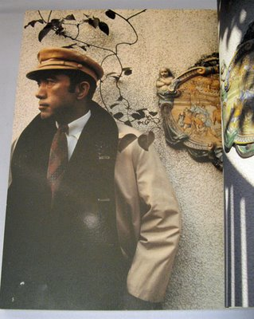
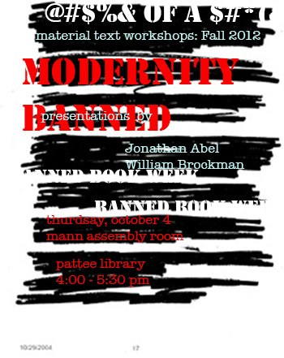

また、三島

もう。。三島？
これでも三島
１９６１
また、三島
10/2/12
勿論、三島
グループプロジェクト・サインアップ
個人発表・サインアップ
Sign up for individual presentation.
Create group project.
Record yourself reading a section of your own writing or a section of our readings. Send me a one minute mp3 file of you reading.
Class on Thursday officially made optional relocated to my presentation
at the library.
Our next Material Text Workshop will take
place on Thursday, Oct. 4 from 4:00- 5:30 pm in the Mann Assembly Room, Pattee
Library. Our presenters will be Jon Abel and Bill Brockman, who will be
presenting on "Modernity Banned." We look forward to seeing you all there!
Celebrating “Banned Books Week,” this workshop will address the question
how we read censored texts. The Material Text Workshop at Penn State engages
participants in thinking about the parameters of book history/print culture
studies and the variety of material sources on which these fields rely.
Jonathan Abel will present on some of the banned materials found in the
censor's secret shelves. We know that a reader's collection of books tell us
something about the collector; and censors typically read the very material
they forbid. But how do we move from knowing what they read to grasping how
they understood the material? What does their reception of risqué writings
and seditious intents reveal about the production of these texts? This
presentation will address these fundamental questions of material history
through a comparison of the documents maintained by the New York Society for
the Suppression of Vice and those of the Japanese Imperial Home Ministry.
William Brockman will discuss the unpublished writings of James Joyce, author
of the famously banned Ulysses, whose estate remains at the forefront of
copyright and public-domain issues. For decades, the estate of James Joyce has
earned a reputation for a heavy-handed exertion of copyright law by
constraining publication of Joyce’s works, interfering with fair use of
quotations in scholarly work, and demanding exorbitant royalties. Though
substantial collections of primary materials have come to light in recent
years, this practice has stifled access to manuscripts and letters. With
Joyce’s unpublished writing passing into the public domain in the United
States and elsewhere this year, opportunities for publication and research have
blossomed. Brockman will survey the unpublished letters and discuss
possibilities for biographical, textual, and critical work.
